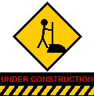

Your on-ramp to the history of
Information Superhighway
design!
*** WELCOME TO MY HOMEPAGE!!! *** Learn all about 90s web design, from hit counters to webrings! *** Please sign my guestbook before you leave! *** Don't forget to bookmark this page! ***
Please choose your experience:
ENTER (Frames version)
Enter (No frames)
(If your browser does not support frames, choose "No frames.")

This site is ALWAYS under construction!
You are visitor number
(since 10/26/1997)
Click here to hear (or stop) my theme song!
(
download theme.mid, 1 KB
)
Best viewed with
Netscape Navigator 3.0
or higher at
800x600
with 256 colors.